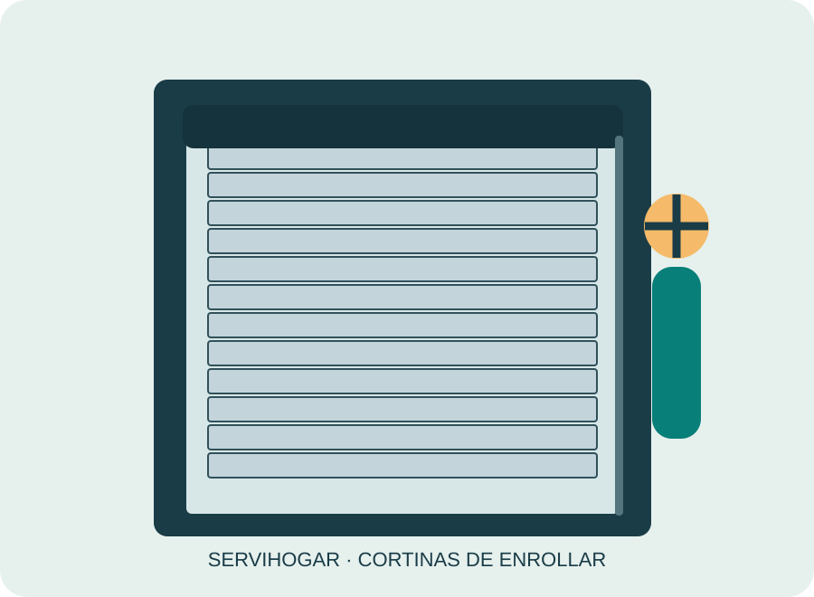

Reparación de cortinas de enrollar
Cortinas trabadas, descolgadas o que suben torcidas: evaluamos guías, ejes, lamas y mecanismos antes de proponer una reparación.
Ver detalles →Cotizamos instalación y reparación de cortinas de aluminio para hogares y locales de Montevideo. Servicio en Montevideo. Presupuesto gratuito al 094 970 715.
☎ Llamar al 094 970 715WhatsApp
Cotizamos instalación y reparación de cortinas de aluminio para hogares y locales de Montevideo. En Servihogar trabajamos con cortinas de enrollar tradicionales de PVC, aluminio y madera. Nos enfocamos en las piezas y mecanismos propios de este sistema; no ofrecemos instalación ni reparación de cortinas roller o verticales.
El aluminio es una opción habitual para quienes buscan un acabado durable. La compatibilidad del paño con el cajón y el eje se verifica antes del presupuesto. También consideramos el ancho del paño, el estado del cajón, el tipo de accionamiento y el acceso a la abertura. Esta revisión ayuda a distinguir una reparación puntual de una sustitución mayor.
Para pedir un presupuesto gratuito, comunicate al 094 970 715. Si enviás una fotografía, medidas aproximadas y tu barrio de Montevideo, podemos orientar mejor la consulta. El importe final de cualquier trabajo se acuerda antes de realizarlo.
Cortinas trabadas, descolgadas o que suben torcidas: evaluamos guías, ejes, lamas y mecanismos antes de proponer una reparación.
Ver detalles →Sustituimos cintas desgastadas o cortadas y comprobamos el recorrido, el pasacintas y el enrollador.
Ver detalles →Reemplazamos barrotes o varillas deterioradas en cortinas de enrollar, verificando su encastre y desplazamiento.
Ver detalles →Instalamos cortinas nuevas en ventanas de viviendas, apartamentos y locales, con asesoramiento de medidas y materiales.
Ver detalles →Presupuestos gratuitos para cortinas de PVC nuevas, instalación y reparación de paños existentes.
Ver detalles →Reparamos cortinas de enrollar de madera, con evaluación de varillas, uniones y mecanismos.
Ver detalles →